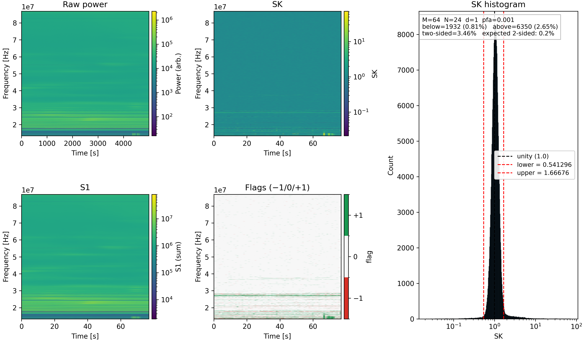
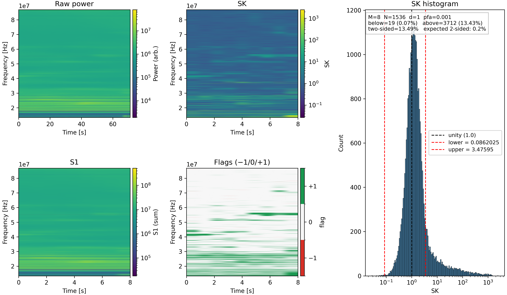

OVRO–LWA Two–Stage Spectral Kurtosis (SK) Example¶
A real–data application of pyGSK ≥ 2.1.0
This page documents a fully reproducible two–stage Spectral Kurtosis (SK) workflow
applied to OVRO–LWA total–power HDF5 data, demonstrating how to use
pygsk.runtests.run_sk_test and related helpers in a real–instrument pipeline.
Two main entry points are provided:
scripts/ovro-lwa.py— command–line application (publishable example).notebooks/ovro_lwa_two_stage_sk_example.ipynb— equivalent Jupyter notebook, ideal for exploration, teaching, and iterative analyses.
Both examples implement:
- File autodetection (
basename,.h5,.hdf5) - Automatic extraction of XX/YY streams, frequency axes, and timestamps
- Two–stage SK processing (Stage 1 → Stage 2 via SK renormalization)
- Time–range selection (
--start-idx,--ns-max) - Optional output (plots/NPZ saved only when explicitly requested)
- Filename tags encoding time ranges, SK parameters, stage, and polarization
1. Overview of the Two–Stage SK Method¶
The SK estimator (Nita & Gary 2010) provides robust RFI/outlier detection for spectral–domain instruments. OVRO–LWA data, like many low–frequency arrays, benefit from a two–stage SK approach:
Stage 1¶
- Integrates using
(M1, N1, d) - Produces first–order SK and flags
- Generates block–summed spectra (
s1) for Stage 2
Stage 2¶
- Uses the Stage 1 output
s1as the new “power” - Integrates over a much longer effective number of samples:
text
N2 = M1 × N1
- Produces high–sensitivity SK diagnostics
- Identifies persistent or subtle bursts, transients, or RFI
Both stages use the same run_sk_test() machinery, and both support:
- Histograms
- Context (dynamic spectrum) plots
- Automatic thresholds for a given probability of false alarm (
pfa) - Verbose diagnostics and logging
2. File Structure in This Repository¶
The OVRO–LWA example in this repository lives at the top level rather than
under examples/. The relevant files are:
ovro-lwa-sk-pipeline/
│
├── scripts/
│ ├── ovro-lwa.py # Two–stage SK CLI example
│ ├── ovro_lwa_sk_stream.py # Stage 1 streaming SK
│ ├── ovro_lwa_rfi_clean.py # Stage 2 cleaning / renormalization
│ ├── ovro_lwa_sk_quicklook.py # Quicklook plotting
│ ├── ovro_lwa_batch_stream.py # Batch Stage 1
│ ├── ovro_lwa_batch_rfi_clean.py # Batch Stage 2
│ ├── ovro_lwa_batch_quicklook.py # Batch quicklook
│ └── ovro_lwa_batch_pipeline.py # 3-stage batch pipeline driver
│
├── notebooks/
│ └── ovro_lwa_two_stage_sk_example.ipynb # Jupyter notebook version
│
├── figures/
│ ├── 060963_182827094797b4e9492_XX_t10000-15000_M64_N24_d1.0_stage1_hist.png
│ └── 060963_182827094797b4e9492_XX_t10000-15000_M8_N1536_d1.0_stage2_hist.png
│
└── data/demo/
└── ovro_lwa_demo.h5 # Small demo HDF5 file
3. Running the Command-Line Application (ovro-lwa.py)¶
Although the scripts can be run from anywhere via $PATH, the examples below
assume you are in the repository root.
Basic usage (no output saved)¶
python scripts/ovro-lwa.py data/demo/ovro_lwa_demo.h5
This will display diagnostic plots interactively and not save files unless explicit options are given.
Selecting a time range¶
Process only the first 50,000 time frames:
python scripts/ovro-lwa.py data/demo/ovro_lwa_demo.h5 --ns-max 50000
Start at index 10,000 and read 5,000 frames:
python scripts/ovro-lwa.py data/demo/ovro_lwa_demo.h5 --start-idx 10000 --ns-max 5000
The script safely clips ranges so it never exceeds file limits.
Saving outputs¶
Save PNGs:
python scripts/ovro-lwa.py data/demo/ovro_lwa_demo.h5 --save-plot --outdir results
Save NPZ diagnostics:
python scripts/ovro-lwa.py data/demo/ovro_lwa_demo.h5 --save-npz --outdir results
Save both:
python scripts/ovro-lwa.py data/demo/ovro_lwa_demo.h5 --save-plot --save-npz --outdir results
Full example¶
python scripts/ovro-lwa.py data/demo/ovro_lwa_demo.h5 --pol XX --M1 64 --M2 8 --N 24 --d 1.0 --pfa 1e-3 --start-idx 0 --ns-max 50000 --scale log --cmap magma --save-plot --save-npz --outdir results
4. Filename Convention¶
Output files include:
- HDF5 base name
- Polarization (XX/YY)
- Time range:
t<start>-<stop> - Stage (
stage1orstage2) - SK parameters:
M<M>_N<N>_d<d>
Example Stage 1 output:
060963_182827094797b4e9492_XX_t10000-15000_M64_N24_d1.0_stage1_hist.png
and Stage 2 output:
060963_182827094797b4e9492_XX_t10000-15000_M8_N1536_d1.0_stage2_hist.png
This makes batch runs self–documenting.
5. Example Outputs (Stage 1 and Stage 2)¶
The following figures were generated with a command like:
python scripts/ovro-lwa.py data/demo/ovro_lwa_demo.h5 --pol XX --start-idx 10000 --ns-max 5000 --scale log --save-plot
Time range:
t10000–15000
Stage 1 Output (M1 = 64, N1 = 24, d = 1)¶

Stage 2 Output (M2 = 8, N2 = 1536, d = 1)¶

6. Jupyter Notebook Version¶
File: notebooks/ovro_lwa_two_stage_sk_example.ipynb
Features:
- Editable configuration cell
- Fully documented workflow
- Inline figures
- Ideal for experimentation and teaching
Run it in JupyterLab, Jupyter Notebook, or VS Code, making sure your
Python environment has pyGSK and friends available.
7. Batch Processing Pipeline¶
The OVRO–LWA example set includes a small three–stage SK analysis pipeline:
- SK streaming (
ovro_lwa_sk_stream.py) - RFI cleaning (
ovro_lwa_rfi_clean.py) - Quicklook plotting (
ovro_lwa_sk_quicklook.py)
For convenience, there are three batch wrappers and one unified driver:
ovro_lwa_batch_stream.py– run Stage 1 for many raw HDF5 filesovro_lwa_batch_rfi_clean.py– run Stage 2 for many_skstream.h5filesovro_lwa_batch_quicklook.py– run Stage 3 for many SK productsovro_lwa_batch_pipeline.py– run all three stages in sequence for each raw file
All batch scripts accept either:
- an explicit list of files, and/or
- an input directory (
--indir) plus a glob pattern (--pattern).
A --dry-run flag is available in all batch scripts; it prints the commands
that would be executed without actually running them.
Example: full three–stage pipeline¶
python scripts/ovro_lwa_batch_pipeline.py --indir /path/to/ovro_lwa/raw_h5_files --pattern "060963_*" --stream-out ./results --rfi-out ./results --png-out ./png --M 64 --N 24 --d 1.0 --pfa 1e-3 --F-block 8 --flag-mode separate --pol both --scale log --vmin 1e6 --vmax 1e8
8. Requirements¶
- Python ≥ 3.9 (3.11 recommended)
pyGSK≥ 2.1.0numpymatplotlibh5py- (for notebooks) JupyterLab or Jupyter Notebook
9. Attribution¶
The Spectral Kurtosis formalism is based on:
- Nita & Gary (2010), The Generalized Spectral Kurtosis Estimator, PASP, 122, 595.
This example is built on the pyGSK toolkit: